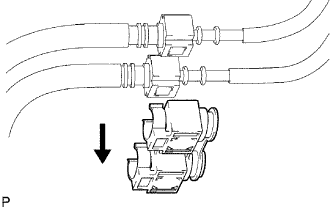
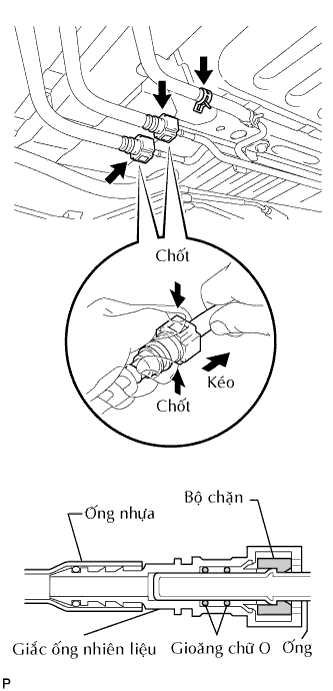
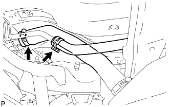
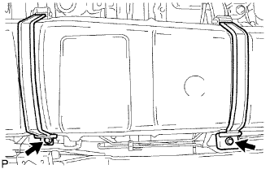
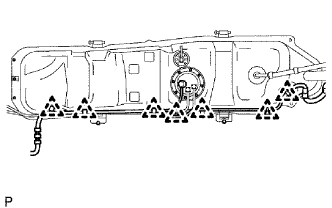
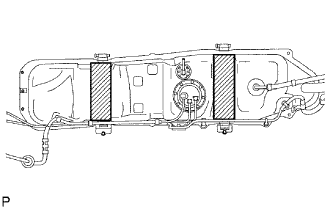
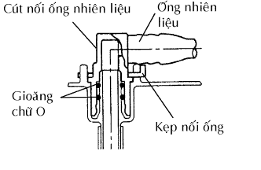
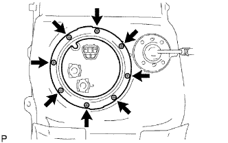
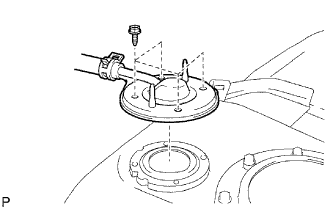

BÌNH NHIÊN LIỆU > THÁO |
| 1. XẢ ÁP SUẤT CỦA HỆ THỐNG NHIÊN LIỆU |
Ngắt cáp ra khỏi cực âm của ắc quy.
Hãy tháo tấm ốp bậu cửa bên phía người lái.
Dùng một tô vít, nhả khớp 7 vấu.
Dùng một dụng cụ tháo kẹp, nhả khớp 3 kẹp và tháo tấm ốp bậu cửa.
 |
Hãy lật thảm trải sàn và ngắt cút nối ra, như được chỉ ra trên hình vẽ.
Ngắt cáp ra khỏi cực âm của ắc quy.
Khởi động động cơ. Sau khi động cơ tự chết máy, hãy tắt khoá điện OFF.
Quay khởi động động cơ một lần nữa và sau đó kiểm tra rằng động cơ không thể nổ được máy.
Nới lỏng nắp bình nhiên liệu và sau đó xả áp suất bình nhiên liệu hoàn toàn.
Nối giắc của bơm nhiên liệu.
Hãy lắp tấm ốp bậu cửa bên phía người lái.
Xoá các mã DTC (Xem trang Kích chuột vào đây).
| 2. NGẮT CÁP ÂM RA KHỎI ẮC QUY |
| 3. THÁO CỤM NẮP BÌNH NHIÊN LIỆU |
| 4. THÁO KẸP ỐNG NHIÊN LIỆU NO.3 |
|  |
Tháo kẹp ống ra khỏi ống nhiên liệu.
| 5. THÁO ỐNG NHIÊN LIỆU CHÍNH VÀ ỐNG HỒI NHIÊN LIỆU |
|  |
Kẹp và kéo cút nối ống chính để ngắt cút nối ra khỏi ống. Sau đó kẹp và kéo cút nối ống hồi để ngắt cút nối ra khỏi ống thép.
Tháo ống thông hơi.
| 6. THÁO BÌNH NHIÊN LIỆU RA KHỎI ỐNG ĐỔ NHIÊN LIỆU VÀO |
|  |
Ngắt ống nạp nhiên liệu ra khỏi ống nạp bình xăng.
| 7. THÁO ỐNG THÔNG HƠI BÌNH NHIÊN LIỆU |
Ngắt ống thông hơi ra khỏi ống nạp nhiên liệu.
| 8. THÁO ỐNG VÀO NHIÊN LIỆU |
Tháo bulông và ống nhiên liệu vào.
| 9. THÁO BÌNH NHIÊN LIỆU |
Hãy đặt kích phía dưới bình xăng.
|  |
Tháo 2 bu lông, 2 kẹp, 2 chốt và đai bắt bình xăng.
|  |
Hãy hạ nhẹ kích và nhả khớp 7 kẹp dây điện đang giữ dây điện vào bình xăng. Sau đó, ngắt giắc của bộ đo nhiên liệu.
| 10. THÁO ĐỆM BÌNH XĂNG NO.1 |
|  |
Tháo 2 đệm bình xăng ra khỏi bình xăng.
| 11. THÁO CỤM ỐNG HÚT CÓ BƠM VÀ ỐNG BỘ ĐO NHIÊN LIỆU |
 |
Tháo 2 kẹp ống nhiên liệu và kéo 2 ống bơm nhiên liệu ra.
|  |
|  |
Hãy ấn bơm nhiên liệu xuống và tháo 8 bu lông và đĩa bắt.
Tháo ống bộ đo nhiên liệu ra khỏi bình xăng.
Tháo gioăng ra khỏi bình xăng.
| 12. THÁO CỤM VAN CẮT NHIÊN LIỆU |
|  |
Tháo 4 bu lông, ống thông hơi bình xăng, gioăng và van cắt nhiên liệu.
Tháo ống nhiên liệu ra khỏi ống thông hơi bình xăng.
| 13. THÁO BẢO VỆ BÌNH XĂNG NO.1 |
Tháo 3 bulông và bộ bảo vệ.